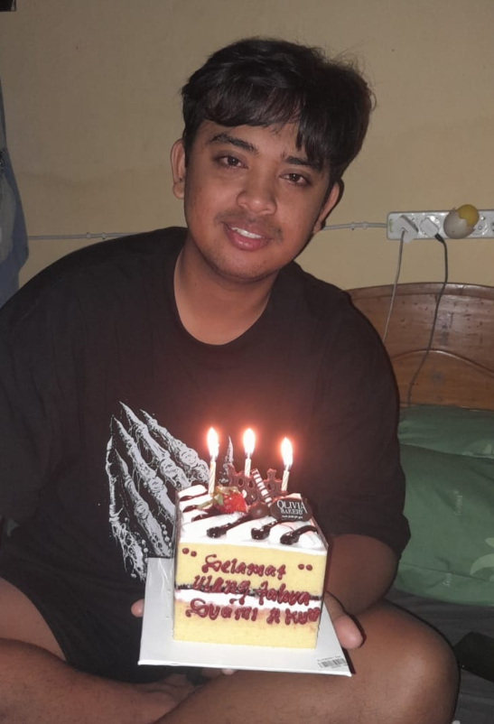
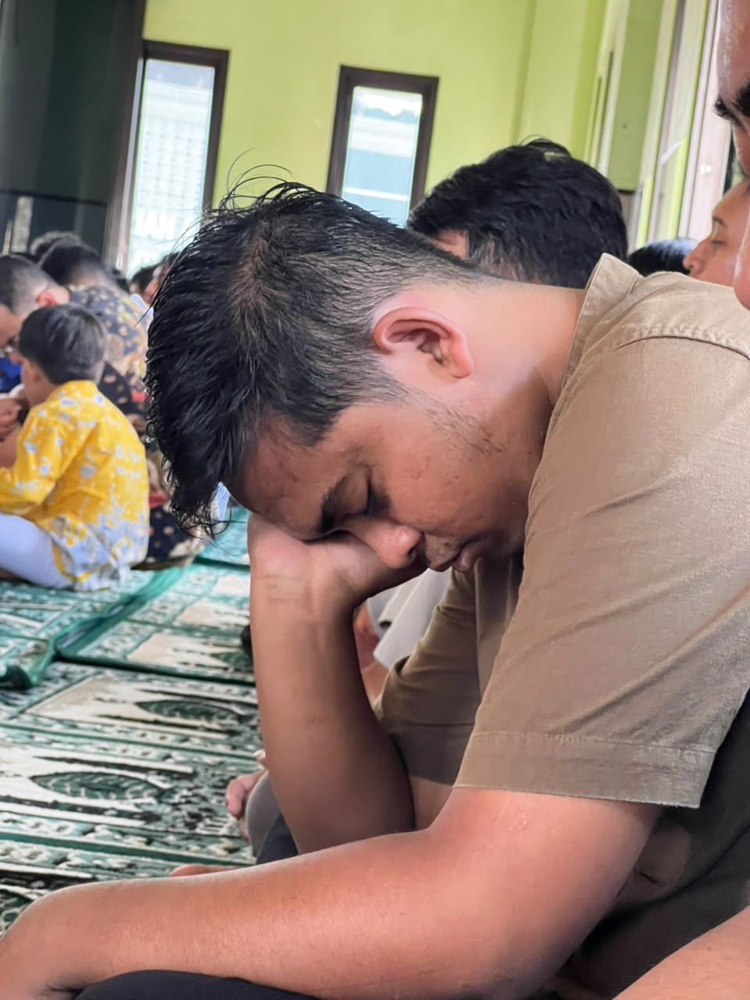
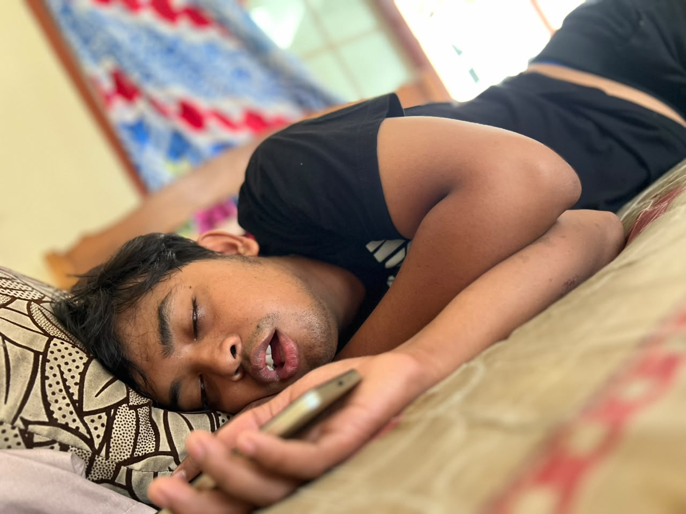

🎉 HBD MAS ARIPIN TERKEREN SE-RT • WISH YOU ALL THE BEST • SALAM SANTUN SELALU 🎉
🎉 HBD MAS ARIPIN TERKEREN SE-RT • WISH YOU ALL THE BEST • SALAM SANTUN SELALU 🎉
Salam Online Qu
🌹
🌷
🌻
🌸
🌺
🌼
🌹
🌷

Assalamu'alaikum Warohmatullohi Wabarokatuh
Selamat Hari Lahir buat Sabat Online Qu Yang Terhormat Mas Aripin 🙏🏼
🍜 jo lali sesok baksoooo koyo biasane boloo! 👍🏼
Mugo-mugo sehat, sukses, lan berkah umuripun.
Salam Santun & Bahagia Selalu 🙏🏼☕🌷
Salam Santun & Bahagia Selalu 🙏🏼☕🌷
👀 dokumentasiku pas bubuk h3h3

